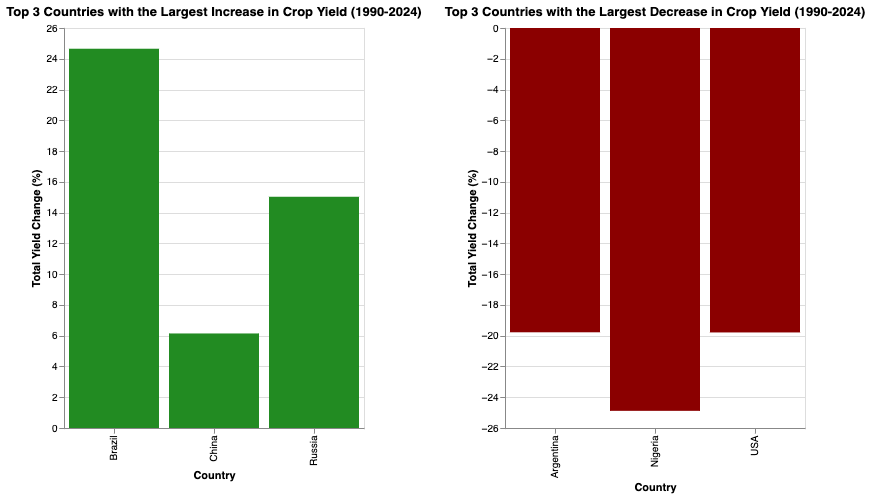

Country Crop Yields Over Time
To help us identify possible climate change factors affecting crop yields, we started by identifying countries that have seen the most/least improvement in crop yields from 1990 - 2024. The graph below calculates the average crop yield for a country in 1990 compared to 2024 and we identified the top 3 countries being Brazil, China, and Russia whereas the bottom 3 were Argentina, Russia, and the USA.
Regional Analysis: CO2 Emissions vs Crop Yields
This section visualizes the relationship between CO2 emissions and crop yields for Nigeria and Russia.
[PLACEHOLDER SECTION]
[SECTION PLACEHOLDER]

[PLACEHOLDER SECTION]
[SECTION PLACEHOLDER]